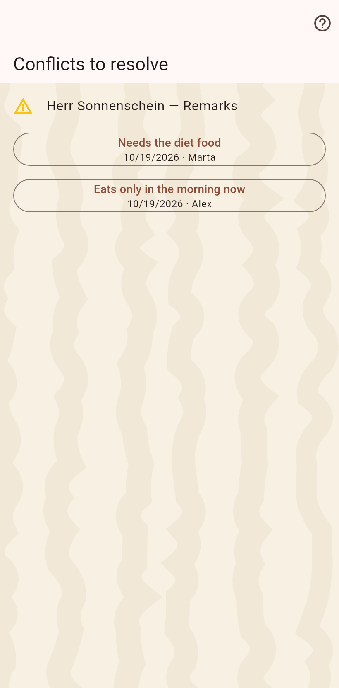
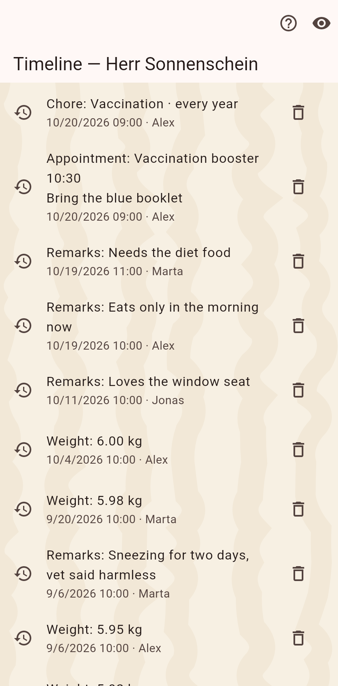

1. The conflict
The row shows both values with who wrote them and when. A tap keeps one; the choice is an ordinary entry that reaches every device.

2. Afterwards
The timeline shows the decision as the latest value; the losing one stays in the history.
